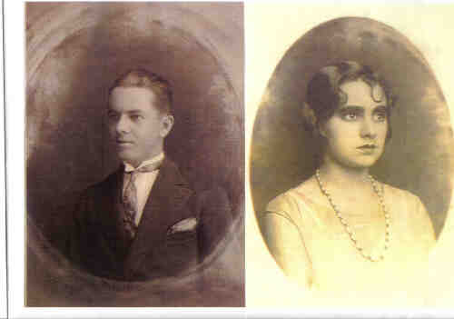
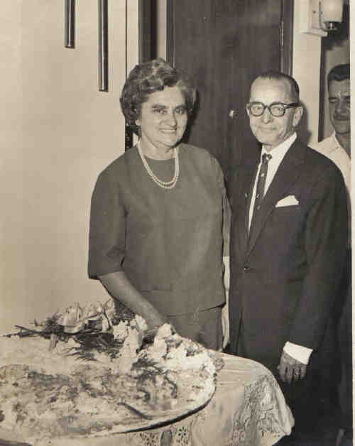

|
Narciso Rodrigues Martins (1907-1996) |
Narciso Rodrigues Martins
Narciso era irmão da Constância (esposa do Ítalo).
 • fotos: Narciso e Júlia.  • fotos: Júlia e Narciso ---aniversário da Júlia 1963 (quando mudaram de Catanduva para São Paulo). 
(Clique na Foto para vê-la no Tamanho Original)")
• fotos: Narciso - Narciso José - Roberta - Júlia --aniversário do Narciso.(1995) 
(Clique na Foto para vê-la no Tamanho Original)")
• fotos: Bodas de ouro Júlia e Narciso. Antônio_Regina Augusta_Oswaldo_Maria Regina_Narciso_Júlia_Maria Aparecida_Hélio_Narciso José 
(Clique na Foto para vê-la no Tamanho Original)")
• fotos: Bodas de diamante Julia e Narciso. com os filhos Maria Aparecida_Maria Regina_Narciso José_Antonio • fotos. Narciso casad[:o::a] Júlia Facci, filha de Nicola Facci e Ermínia Petrella, em 6 Abr 1932. (Júlia Facci nasceu em em 1 Set 1913 e faleceu em 28 Mai 1999.) |
 Notas Gerais:
Notas Gerais: